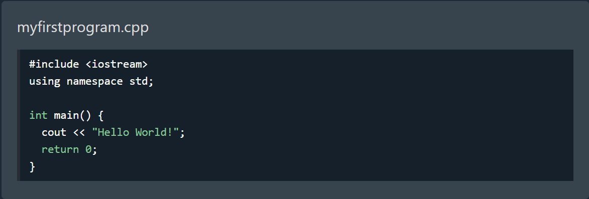
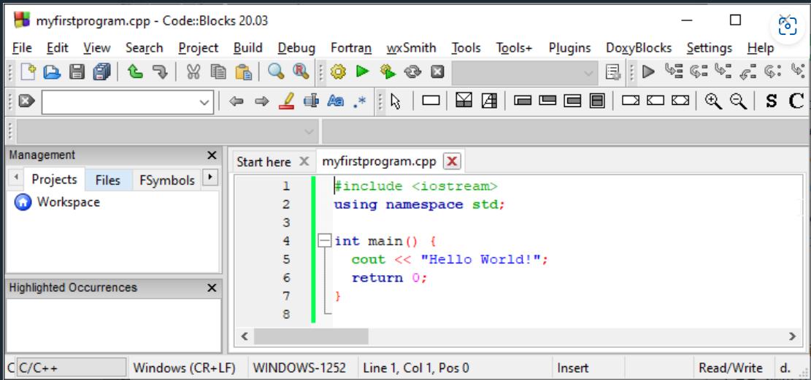
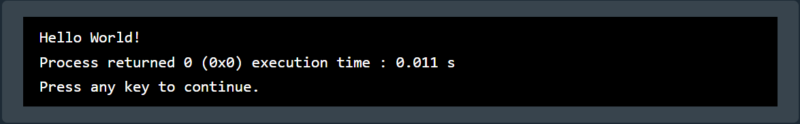

1) C++ Get Started
To start using C++, you need two things:
- A text editor, like Notepad, to write C++ code
- A compiler, like GCC, to translate the C++ code into a language that the computer will understand
There are many text editors and compilers to choose from. In this tutorial, we will use an IDE (see below).
2) C++ Install IDE
An IDE (Integrated Development Environment) is used to edit AND compile the code.
Popular IDE's include Code::Blocks, Eclipse, and Visual Studio. These are all free, and they can be used to both edit and debug C++ code.
Note: Web-based IDE's can work as well, but functionality is limited.
We will use Code::Blocks in our tutorial, which we believe is a good place to start.
3) C++ Quickstart
Let's create our first C++ file.
Open Codeblocks and go to File > New > Empty File.
Don't worry if you don't understand the code above - we will discuss it in detail in later chapters. For now, focus on how to run the code.
In Codeblocks, it should look like this:
Then, go to Build > Build and Run to run (execute) the program. The result will look something to this:
Congratulations! You have now written and executed your first C++ program.